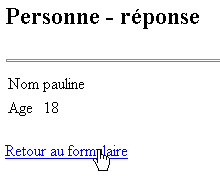
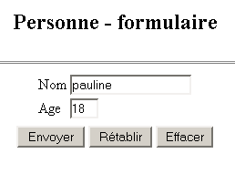
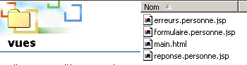
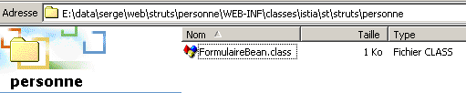

2. strutspersonne 应用程序
我们已使用传统方法（Servlet 和 JSP 页面）实现了一个“person”应用程序。现在，我们将通过这个应用程序来介绍 Struts。
2.1. 应用程序的工作原理
让我们回顾一下我们开发的“person”应用程序是如何工作的。它由以下部分组成：
- 一个主 Servlet。它负责处理所有应用程序逻辑。
- 三个 JSP 页面：formulaire.personne.jsp、reponse.personne.jsp 和 erreurs.personne.jsp
该应用程序的工作原理如下。可通过 URL http://localhost:8080/personne/main 访问。访问该 URL 时，将显示由 formulaire.personne.jsp 页面提供的表单：

用户填写表单并点击 [提交] 按钮。[重置] 按钮用于将文档恢复至初始接收时的状态。[删除] 按钮为标准按钮。用户必须提供有效的姓名和年龄。若未满足此条件，系统将通过 JSP 页面 erreurs.personne.jsp 向用户返回错误页面。以下是一些示例：
对话 #1
 |  |
如果您点击[返回表单]链接，您将看到表单处于您离开时的状态：
交流 #2
 |  |
如果用户提交了有效数据，应用程序将通过 JSP 页面 response.personne.jsp 发送响应。
对话 #1
 |  |
如果您点击[返回表单]链接，您将看到表单处于您离开时的状态：
交流 #2
 |  |
2.2. 应用程序的 Struts 架构
我们将采用以下 Struts 架构：
 |
- 将有三个视图
- 控制器将由 Struts 提供
- FormBean 是负责存储视图 form.person.jsp 提交的表单值的类
- FormAction 类负责处理 FormBean 的值，并指定要发送的响应页面：
- 如果表单数据有误，则显示 errors.person.jsp 视图
- 否则，将返回 response.personne.jsp 视图
对于开发人员而言，任务包括编写以下代码：
- 三个视图
- 与表单关联的 FormBean
- 负责处理表单的 FormAction 类
2.3. 编译 Struts 应用程序所需的类
为了编译应用程序所需的类，我们将使用 JBuilder。JBuilder 配合使用的 JDK 并不包含 Struts 应用程序所需的类。我们可以按以下方式配置 JBuilder：
- 工具 / 配置 JDK

- 使用 [添加] 按钮将 Struts 提供的 .jar 文件添加到 JBuilder 的类库中。如果您已将 Struts 压缩包解压到本地磁盘，可以将 <struts>/lib 文件夹中的所有 .jar 文件添加到 JBuilder 中：

您可以将上述所有 .jar 文件添加到 JBuilder 的归档中。我们已经看到，Tomcat 也需要访问 Struts 归档。对于 Tomcat 4.x，您可以将 Struts .jar 文件放置在 <tomcat4>\common\lib 中。对于 Tomcat 5.x，您可以将它们放置在 <tomcat5>\shared\lib 中。 随后，您可以配置 JBuilder，使其在与 Tomcat 相同的位置查找 Struts .jar 文件。这就是前面提到的展示 JBuilder .jar 文件的屏幕截图中所做的操作。这些文件是从 <tomcat5>\shared\lib 目录中获取的。
因此，如果 JBuilder 在编译类时报告无法找到 Struts 类，请检查以下两点：
- 类名的拼写
- JBuilder所使用的.jar文件。所有Struts .jar文件都必须包含在内。
2.4. strutspersonne 应用程序的视图
该应用程序的三个视图如下：
- form.person.jsp：显示用于输入姓名和年龄的表单
- response.personne.jsp：若输入值有效，则显示这些值
- errors.person.jsp：显示任何错误
2.4.1. errors.personne.jsp 视图
该视图用于显示错误列表，定义如下：
<%@ taglib uri="/WEB-INF/struts-html.tld" prefix="html" %>
<html>
<head>
<title>Personne</title>
</head>
<body>
<h2>Les erreurs suivantes se sont produites</h2>
<html:errors/>
<html:link page="/formulaire.do">
Retour au formulaire
</html:link>
</body>
</html>
此代码中有两个新特性：
- 出现了 <html:XX/> 标签，这些并非 HTML 标签。您可以创建 JSP 标签库，当 JSP 页面转换为 Servlet 时，这些标签会被转换为 Java 代码。
- JSP 页面必须声明其使用的标签库。此处通过以下代码行进行声明：
这一行提供了两条信息：
- uri：控制库使用规则的文件位置。struts-html.tld 文件包含在 Struts 发行版中。在上例中，该文件位于 WEB-INF 文件夹内。
- prefix：代码中用于修饰库标签的前缀标识符。这可避免同时使用多个标签库时可能出现的命名冲突。两个不同的库中可能存在名称相同的标签。通过为每个库指定不同的前缀，即可消除任何歧义。
- <html:errors> 标签用于显示 Struts 控制器发送给它的错误列表。
- <html:link> 标签生成一个指向 /C/page 的链接，其中
- C 代表应用程序上下文
- page 是该标签的 page 属性中指定的 URL
该
将生成以下 HTML 代码：
其中 C 是应用程序上下文
2.4.2. 测试 errors.person.jsp 视图
- errors.person.jsp 文件位于 strutspersonne 应用程序的 views 文件夹中：

- struts-html.tld 文件取自 Struts 发行版（<struts>/lib）并放置在 WEB-INF 目录下：

- 对 struts-config.xml 文件进行了如下修改：
<?xml version="1.0" encoding="ISO-8859-1" ?>
<!DOCTYPE struts-config PUBLIC
"-//Apache Software Foundation//DTD Struts Configuration 1.1//EN"
"http://jakarta.apache.org/struts/dtds/struts-config_1_1.dtd">
<struts-config>
<action-mappings>
<action
path="/main"
parameter="/vues/main.html"
type="org.apache.struts.actions.ForwardAction"
/>
<action
path="/erreurs"
parameter="/vues/erreurs.personne.jsp"
type="org.apache.struts.actions.ForwardAction"
/>
</action-mappings>
</struts-config>
我们在配置文件中创建了一个新的 URL /errors，由 Struts 控制器进行处理。URL /errors.do 将被重定向到视图 /views/errors.person.jsp。struts-config.xml 文件位于 WEB-INF 文件夹中。
- 我们重启 Tomcat 以使新的 struts-config.xml 文件生效，然后请求 URL http://localhost:8080/strutspersonne/erreurs.do：

<html:errors/> 标签未输出任何内容。这是正常的；ForwardAction 并未生成该标签所期望的错误列表。尽管如此，上述响应表明我们的 JSP 视图至少在语法上是正确的；否则，我们会收到一个错误页面。让我们检查浏览器收到的 HTML 代码（查看/源代码）：
<html>
<head>
<title>Personne - erreurs</title>
</head>
<body>
<h2>Les erreurs suivantes se sont produites</h2>
<a href="/strutspersonne/formulaire.do">Retour au formulaire</a>
</body>
</html>
请注意由 <html:link> 标签生成的链接。链接中已自动包含 /strutspersonne 上下文。这使得应用程序可以在不同上下文之间迁移（例如更换机器）时，无需修改由 <html:link> 生成的链接。
2.4.3. response.personne.jsp 视图
该视图用于确认表单中输入的值，内容如下：
<%@ taglib uri="/WEB-INF/struts-html.tld" prefix="html" %>
<%
// on récupère les données nom, age
//String nom=(String)request.getAttribute("nom");
String nom="jean";
//String age=(String)request.getAttribute("age");
String age="24";
%>
<html>
<head>
<title>Personne</title>
</head>
<body>
<h2>Personne - réponse</h2>
<hr>
<table>
<tr>
<td>Nom</td>
<td><%= nom %>
</tr>
<tr>
<td>Age</td>
<td><%= age %>
</tr>
</table>
<br>
<html:link page="/formulaire.do">
Retour au formulaire
</html:link>
</body>
</html>
该页面显示两项信息：[name] 和 [age]，这些信息将由控制器通过预定义的请求对象传递给它。在此，我们进行了一项测试，即控制器将无法设置 [name] 和 [age] 的值。因此，我们使用任意值初始化这两项信息。此外，此处的表单返回链接也是通过 <html:link> 标签生成的。
2.4.4. 测试 response.personne.jsp 视图
- reponse.personne.jsp 文件位于 strutspersonne 应用程序的 views 文件夹中：

- struts-config.xml 文件的修改如下：
<?xml version="1.0" encoding="ISO-8859-1" ?>
<!DOCTYPE struts-config PUBLIC
"-//Apache Software Foundation//DTD Struts Configuration 1.1//EN"
"http://jakarta.apache.org/struts/dtds/struts-config_1_1.dtd">
<struts-config>
<action-mappings>
<action
path="/main"
parameter="/vues/main.html"
type="org.apache.struts.actions.ForwardAction"
/>
<action
path="/erreurs"
parameter="/vues/erreurs.personne.jsp"
type="org.apache.struts.actions.ForwardAction"
/>
<action
path="/reponse"
parameter="/vues/reponse.personne.jsp"
type="org.apache.struts.actions.ForwardAction"
/>
</action-mappings>
</struts-config>
我们在配置文件中创建了一个新的 URL /reponse，由 Struts 控制器处理。URL /reponse.do 将重定向到视图 /vues/reponse.personne.jsp。struts-config.xml 文件位于 WEB-INF 文件夹中。
- 重启 Tomcat 以使新的 struts-config.xml 文件生效，随后访问 URL http://localhost:8080/strutspersonne/erreurs.do：

结果完全符合预期。
2.4.5. formulaire.personne.jsp 视图
该视图显示用于输入用户姓名和年龄的表单。其 JSP 代码如下：
<%@ taglib uri="/WEB-INF/struts-html.tld" prefix="html" %>
<html>
<meta http-equiv="pragma" content="no-cache">
<head>
<title>Personne - formulaire</title>
<script language="javascript">
function effacer(){
with(document.frmPersonne){
nom.value="";
age.value="";
}
}
</script>
</head>
<body>
<center>
<h2>Personne - formulaire</h2>
<hr>
<html:form action="/main" name="frmPersonne" type="istia.st.struts.personne.FormulaireBean">
<table>
<tr>
<td>Nom</td>
<td><html:text property="nom" size="20"/></td>
</tr>
<tr>
<td>Age</td>
<td><html:text property="age" size="3"/></td>
</tr>
<tr>
</table>
<table>
<tr>
<td><html:submit value="Envoyer"/></td>
<td><html:reset value="Rétablir"/></td>
<td><html:button property="btnEffacer" value="Effacer" onclick="effacer()"/></td>
</tr>
</table>
</html:form>
</center>
</body>
</html>
我们看到错误视图中使用了 struts-html.tld 标签库。出现了新的标签：
既用于生成 HTML 标签 <form>，也用于向将处理此表单的控制器提供信息：
请注意，未指定用于将表单参数（GET/POST）发送至控制器的具体方法。可通过 method 属性进行指定。若该属性缺失，则默认使用 POST 方法。 | |||||||
用于生成 <input type="text" value="..."> 标签：
| |||||||
用于生成 HTML 标签 <input type="submit"...> | |||||||
用于生成 HTML 标签 <input type="reset"...> | |||||||
用于生成 HTML 标签 <input type="button"...> |
2.4.6. 与 formulaire.personne.jsp 表单关联的 Bean
- 在 Struts 中，每个表单都必须关联一个 Bean，该 Bean 负责存储表单的值并在当前会话中维护这些值。Bean 是一个必须遵循特定语法的 Java 类。与表单关联的 Bean 必须继承 Struts 库中定义的 ActionForm 类：
- Bean 的属性名称必须与表单字段（即表单中 <html:text> 标签的 property 属性）相对应。根据前一个表单的代码，该 Bean 因此必须包含两个名为 name 和 age 的字段。
- 对于表单中的每个字段 XX，Bean 必须定义两个方法：
- public void setXX(Type value)：用于为 XX 属性赋值
- public getXX(Value type)：用于获取 XX 字段的值
与前一个表单关联的 Bean 可以如下所示：
package istia.st.struts.personne;
import org.apache.struts.action.ActionForm;
public class FormulaireBean extends ActionForm {
// name
private String nom = null;
public String getNom() {
return nom;
}
public void setNom(String nom) {
this.nom = nom;
}
// age
private String age = null;
public String getAge() {
return age;
}
public void setAge(String age) {
this.age = age;
}
}
我们将使用 JBuilder 编译此类。
2.4.7. 测试 formulaire.personne.jsp 视图
formulaire.personne.jsp 文件位于 strutspersonne 应用程序的 views 文件夹中：

- struts-config.xml 文件的修改如下：
<?xml version="1.0" encoding="ISO-8859-1" ?>
<!DOCTYPE struts-config PUBLIC
"-//Apache Software Foundation//DTD Struts Configuration 1.1//EN"
"http://jakarta.apache.org/struts/dtds/struts-config_1_1.dtd">
<struts-config>
<action-mappings>
<action
path="/main"
parameter="/vues/main.html"
type="org.apache.struts.actions.ForwardAction"
/>
<action
path="/erreurs"
parameter="/vues/erreurs.personne.jsp"
type="org.apache.struts.actions.ForwardAction"
/>
<action
path="/reponse"
parameter="/vues/reponse.personne.jsp"
type="org.apache.struts.actions.ForwardAction"
/>
<action
path="/formulaire"
parameter="/vues/formulaire.personne.jsp"
type="org.apache.struts.actions.ForwardAction"
/>
</action-mappings>
</struts-config>
在配置文件中，我们创建了一个新的 URL /form，由 Struts 控制器处理。URL /form.do 将重定向到视图 /views/form.person.jsp。struts-config.xml 文件位于 WEB-INF 文件夹中。
- 我们将 FormulaireBean 类放置在 WEB-INF/classes 目录下：

- 重启 Tomcat 以使新的 struts-config.xml 文件生效，然后访问 URL http://localhost:8080/strutspersonne/formulaire.do：

表单显示正常。我们可能好奇，散布在表单 JSP 代码中的 <html:XX> 标签是如何被“转换”的：
<html>
<meta http-equiv="pragma" content="no-cache">
<head>
<title>Personne - formulaire</title>
<script language="javascript">
function effacer(){
with(document.frmPersonne){
nom.value="";
age.value="";
}
}
</script>
</head>
<body>
<center>
<h2>Personne - formulaire</h2>
<hr>
<form name="frmPersonne" method="post" action="/strutspersonne/main.do">
<table>
<tr>
<td>Nom</td>
<td><input type="text" name="nom" size="20" value=""></td>
</tr>
<tr>
<td>Age</td>
<td><input type="text" name="age" size="3" value=""></td>
</tr>
<tr>
</table>
<table>
<tr>
<td><input type="submit" value="Envoyer"></td>
<td><input type="reset" value="Rétablir"></td>
<td><input type="button" name="btnEffacer" value="Effacer" onclick="effacer()"></td>
</tr>
</table>
</form>
</center>
</body>
</html>
在生成的表单中，[重置]和[清除]按钮可以正常工作。[提交]按钮会重定向到 URL /strutspersonne/main.do。根据应用程序的 web.xml 文件，Struts 控制器将处理此请求。根据 struts-config.html 文件，控制器必须将请求重定向到视图 /vues/main.html。让我们试一试：

一切运行如预期。我们仍需实际处理表单值，即编写一个 Action 类，将表单数据写入 FormBean 对象中。